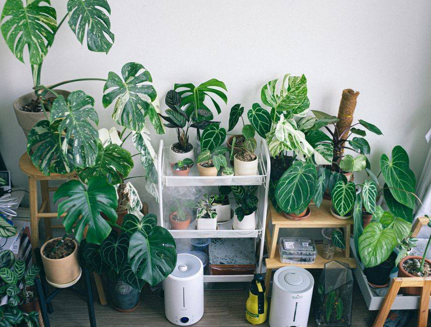

Tips for Maintaining Natural Humidity for Your Indoor Plants in Winter
Maintaining the right humidity levels is crucial for the health and well-being of your indoor plants, especially during the winter months. Low humidity can lead to dry, brittle leaves and reduced overall plant health. Here are five practical tips to help you keep the humidity just right for your indoor plants.

Photo: Huy Phan / Pexels
1. Use a Humidifier
Investing in a humidifier can be a game-changer. A humidifier can maintain a consistent humidity level of around 40-60%, which is ideal for most indoor plants. Position the humidifier near your plants, ideally at a distance of 1-2 feet (0.3-0.6 meters) away, to ensure they can benefit from the increased moisture in the air. This setup works particularly well for species like Boston ferns, which require higher humidity levels.
2. Group Your Plants
Grouping your plants together can create a mini-greenhouse effect, which helps to raise the local humidity around them. Place your plants in a single location, such as a bookcase or a designated plant area, to increase the moisture in the air. For example, if you have a small corner with several plants, they will share the moisture they release through transpiration, creating a more humid environment.
3. Mist Your Plants Regularly
Misting your plants can provide immediate relief to dry air. Use a spray bottle to mist your plants, especially those that prefer higher humidity levels, such as Boston ferns, monstera, and philodendrons. Do this in the morning or early evening, and aim for every 2-3 days. Be careful not to overdo it, as excessive misting can lead to fungal issues.
4. Use Pebble Trays
Pebble trays are a simple and effective solution. Place a layer of pebbles in a tray, fill it with water, and set your plants on top. The water will evaporate and create a humid microclimate around your plants. Ensure the water level is below the pebbles to prevent excess moisture from sitting directly under your plants. This method is particularly useful for plants like sansevieria and pothos, which can thrive in slightly drier conditions but still benefit from added humidity.
5. Avoid Heating Systems Directly
Heating systems can significantly reduce humidity levels in your home. Keep your plants away from direct heat sources, such as radiators or space heaters, to prevent the air from becoming too dry. A distance of at least 3 feet (0.9 meters) from these sources is recommended. Instead, position your plants near a window or in a central location where the air is less affected by heating.
Scenario Example
Imagine you have a collection of indoor plants including a Boston fern, a monstera, and a pothos. In the winter, the central heating system in your home can make the air very dry. You can set up a humidifier in the corner of the room, position your plants around it, and mist them every 2-3 days. Additionally, you can place pebble trays under some of the plants, and keep them away from the radiator. This setup will help create a more humid environment for your plants, ensuring they stay healthy and vibrant throughout the winter.
By implementing these strategies, you can maintain the natural humidity levels your indoor plants need to thrive, even in the dry winter months.
Recommended products
As an Amazon Associate, I earn from qualifying purchases.